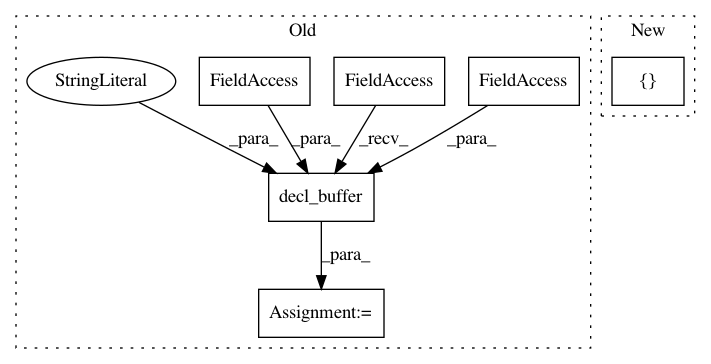

c3511c5e2c2f903606209c9eb6d56c2221570a24,tests/python/unittest/test_tir_transform_storage_rewrite.py,,test_inplace_rule2,#Any#Any#,291
Before Change
Ab = tvm.tir.decl_buffer(A.shape, A.dtype, name="A")
Bb = tvm.tir.decl_buffer(B.shape, B.dtype, name="B")
Cc = tvm.tir.decl_buffer(C.shape, B.dtype, name="C")
Dd = tvm.tir.decl_buffer(D.shape, B.dtype, name="D")
stmt = tvm.tir.ir_pass.StorageFlatten(stmt, {A: Ab, B: Bb, C: Cc, D:Dd}, 64)
mod = tvm.IRModule.from_expr(tvm.tir.PrimFunc([Ab, Bb, Cc, Dd], stmt))
mod = tvm.tir.transform.Simplify()(mod)
mod = tvm.tir.transform.StorageRewrite()(mod)
After Change
assert isinstance(bounds, tvm.container.Map)
stmt = tvm.te.schedule.ScheduleOps(s, bounds)
func = tvm.te.schedule.SchedulePostProcToPrimFunc([A, B, C, D], stmt, None)
mod = tvm.IRModule.from_expr(func)
mod = tvm.tir.transform.StorageFlatten(64)(mod)
In pattern: SUPERPATTERN
Frequency: 3
Non-data size: 6
Instances
Project Name: apache/incubator-tvm
Commit Name: c3511c5e2c2f903606209c9eb6d56c2221570a24
Time: 2020-04-19
Author: tqchen@users.noreply.github.com
File Name: tests/python/unittest/test_tir_transform_storage_rewrite.py
Class Name:
Method Name: test_inplace_rule2
Project Name: apache/incubator-tvm
Commit Name: c3511c5e2c2f903606209c9eb6d56c2221570a24
Time: 2020-04-19
Author: tqchen@users.noreply.github.com
File Name: tests/python/unittest/test_tir_transform_storage_rewrite.py
Class Name:
Method Name: test_storage_share_gpu
Project Name: apache/incubator-tvm
Commit Name: 82942fb33fd6e3572897c815af16905c4f75c2a4
Time: 2020-12-21
Author: masahi129@gmail.com
File Name: python/tvm/topi/cuda/nms.py
Class Name:
Method Name: non_max_suppression